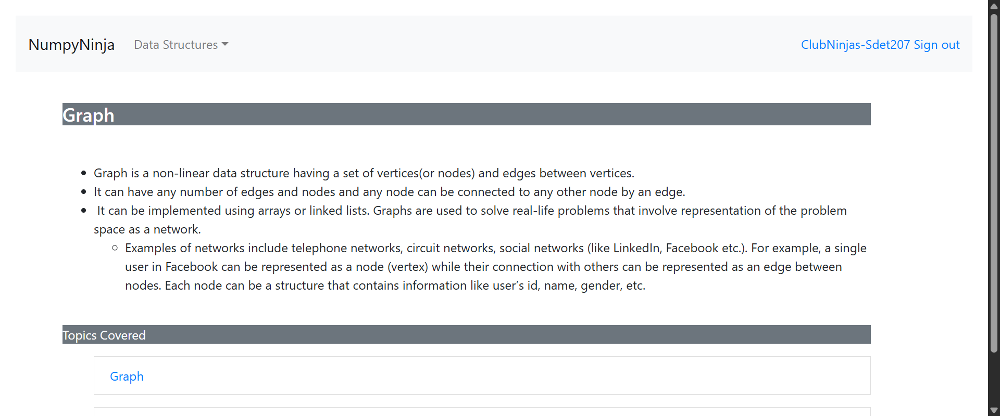
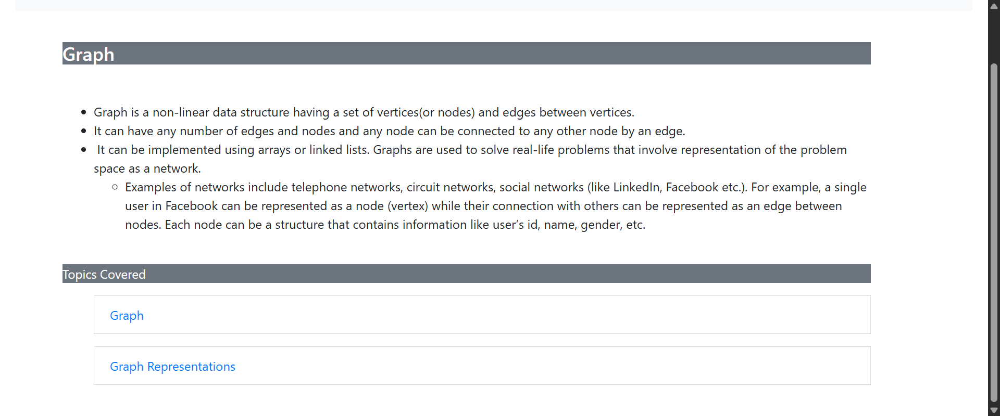
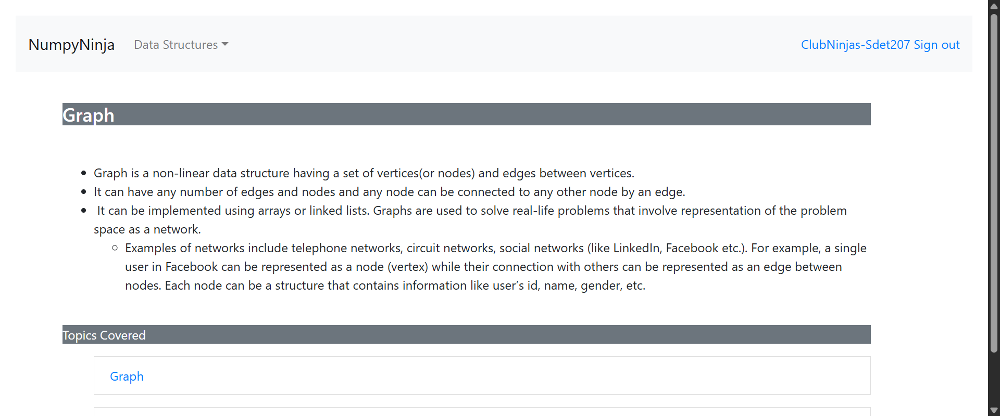
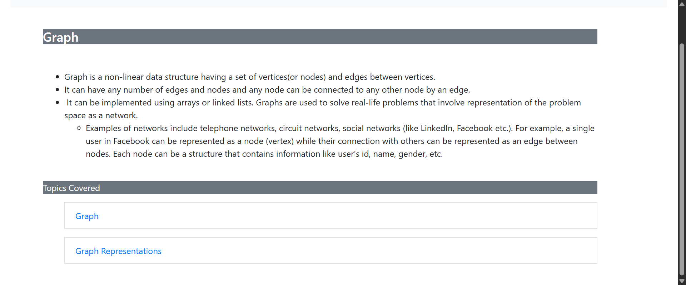

-
Graph
2:39:06 PM / 00:03:56:472 Fail
Graph
05.07.2025 2:39:06 PM 05.07.2025 2:43:03 PM 00:03:56:472 · #test-id=1PassVerify that user able to see warning message while selecting Graph from the dropdown Data Structures without Sign inGiven The user is on the Home pageWhen The user selects Graph from Data Structures dropdownThen The user should able to see an warning message "You are not logged in"PassVerify that user able to see warning message on clicking "Get Started" buttons of "Graph" on the home page without Sign inGiven The user is on the Home pageWhen The user clicks Get Started buttons of Graph on the homepage without Sign inThen The user should able to see an warning message_graph "You are not logged in"PassVerify that user is able to click on graphs Get started button of Graph on the home page after giving valid username and passwordPassVerify that user is able to click on graphs Get started button of Graph on the home page after giving valid username and passwordGiven The user is on the Home pageWhen The user gets data from excel sheet 'Valid_Login' and 1 for the login page and clicks Graphs Get Started buttonThen The user should able to redirect to the Graph pagePassVerify that user is able to click on the sublink Graph from the Tree pageGiven The user is on the Graph pageWhen The user clicks on the sublink Graph on the Graph pageThen The user should redirect to the sublink Graph pageFailVerify that user is able to click on the button Try here >>> from the sublink Graph pageGiven The user is on the sublink Graph pageWhen The user clicks on the button Try here >>> from the sublink Graph pageStep skippedThen The user should able to redirect to a new page with text area for trying the codeStep skippedHooks.Hooks.teardown(io.cucumber.java.Scenario)screenshot FailVerify that user is able to type python code in the text area of sublink Graph pageFailVerify that user is able to type python code in the text area of sublink Graph pageGiven The user is on the try here textarea of sublink Graph pageWhen The user gets python code from excel sheet 'Graph' and 1 for the tryeditor and click run buttonStep skippedThen The user should able to get the result from excel sheet 'Graph' and 1Step skippedHooks.Hooks.teardown(io.cucumber.java.Scenario)screenshotFailUser submits different codes and receives an alertFailUser submits different codes and receives an alertGiven The user is on the try here textarea of sublink Graph pageWhen I enter the code from excel sheet 'Graph' and 2Step skippedThen The user should be able to receive an alert message from excel sheet 'Graph' and 2Step skippedHooks.Hooks.teardown(io.cucumber.java.Scenario)screenshotFailUser submits different codes and receives an alertGiven The user is on the try here textarea of sublink Graph pageWhen I enter the code from excel sheet 'Graph' and 4Step skippedThen The user should be able to receive an alert message from excel sheet 'Graph' and 4Step skippedHooks.Hooks.teardown(io.cucumber.java.Scenario)screenshot
FailVerify that user is able to type python code in the text area of sublink Graph pageFailVerify that user is able to type python code in the text area of sublink Graph pageGiven The user is on the try here textarea of sublink Graph pageWhen The user gets python code from excel sheet 'Graph' and 1 for the tryeditor and click run buttonStep skippedThen The user should able to get the result from excel sheet 'Graph' and 1Step skippedHooks.Hooks.teardown(io.cucumber.java.Scenario)screenshotFailUser submits different codes and receives an alertFailUser submits different codes and receives an alertGiven The user is on the try here textarea of sublink Graph pageWhen I enter the code from excel sheet 'Graph' and 2Step skippedThen The user should be able to receive an alert message from excel sheet 'Graph' and 2Step skippedHooks.Hooks.teardown(io.cucumber.java.Scenario)screenshotFailUser submits different codes and receives an alertGiven The user is on the try here textarea of sublink Graph pageWhen I enter the code from excel sheet 'Graph' and 4Step skippedThen The user should be able to receive an alert message from excel sheet 'Graph' and 4Step skippedHooks.Hooks.teardown(io.cucumber.java.Scenario)screenshot FailUser submits different codes and receives an alertGiven The user is on the try here textarea of sublink Graph pageWhen I enter the code from excel sheet 'Graph' and 5Step skippedThen The user should be able to receive an alert message from excel sheet 'Graph' and 5Step skippedHooks.Hooks.teardown(io.cucumber.java.Scenario)screenshot
FailUser submits different codes and receives an alertGiven The user is on the try here textarea of sublink Graph pageWhen I enter the code from excel sheet 'Graph' and 5Step skippedThen The user should be able to receive an alert message from excel sheet 'Graph' and 5Step skippedHooks.Hooks.teardown(io.cucumber.java.Scenario)screenshot FailUser submits different codes and receives an alertGiven The user is on the try here textarea of sublink Graph pageWhen I enter the code from excel sheet 'Graph' and 6Step skippedThen The user should be able to receive an alert message from excel sheet 'Graph' and 6Step skippedHooks.Hooks.teardown(io.cucumber.java.Scenario)screenshot
FailUser submits different codes and receives an alertGiven The user is on the try here textarea of sublink Graph pageWhen I enter the code from excel sheet 'Graph' and 6Step skippedThen The user should be able to receive an alert message from excel sheet 'Graph' and 6Step skippedHooks.Hooks.teardown(io.cucumber.java.Scenario)screenshot FailVerify user is able to navigate to the previous page sublink Graph on clicking browser back buttonGiven The user is on the try here textarea of sublink Graph pageWhen The user try to click on the browser back buttonStep skippedThen The user should be able to navigate to the previous page from the try here page ie, Graph pageStep skippedHooks.Hooks.teardown(io.cucumber.java.Scenario)screenshot
FailVerify user is able to navigate to the previous page sublink Graph on clicking browser back buttonGiven The user is on the try here textarea of sublink Graph pageWhen The user try to click on the browser back buttonStep skippedThen The user should be able to navigate to the previous page from the try here page ie, Graph pageStep skippedHooks.Hooks.teardown(io.cucumber.java.Scenario)screenshot PassVerify that user is able to click on the link Graph Representations from the Graph pageGiven The user is on the Graph pageWhen The user clicks on the link Graph Representations on the Graph pageThen The user should redirect to the Graph Representations pageFailVerify that user is able to click on the button Try here >>> from the Graph Representations pageGiven The user is on the Graph Representations pageWhen The user clicks on the button Try here >>> from the Graph Representations pageStep skippedThen The user should able to redirect to a new page with text area for trying the codeStep skippedHooks.Hooks.teardown(io.cucumber.java.Scenario)screenshot
PassVerify that user is able to click on the link Graph Representations from the Graph pageGiven The user is on the Graph pageWhen The user clicks on the link Graph Representations on the Graph pageThen The user should redirect to the Graph Representations pageFailVerify that user is able to click on the button Try here >>> from the Graph Representations pageGiven The user is on the Graph Representations pageWhen The user clicks on the button Try here >>> from the Graph Representations pageStep skippedThen The user should able to redirect to a new page with text area for trying the codeStep skippedHooks.Hooks.teardown(io.cucumber.java.Scenario)screenshot FailVerify that user is able to type python code in the text area of Graph Representations pageFailVerify that user is able to type python code in the text area of Graph Representations pageGiven The user is on the try here textarea of Graph Representations pageWhen The user gets python code from excel sheet 'Graph' and 1 for the tryeditor and click run buttonStep skippedThen The user should able to get the result from excel sheet 'Graph' and 1Step skippedHooks.Hooks.teardown(io.cucumber.java.Scenario)screenshot
FailVerify that user is able to type python code in the text area of Graph Representations pageFailVerify that user is able to type python code in the text area of Graph Representations pageGiven The user is on the try here textarea of Graph Representations pageWhen The user gets python code from excel sheet 'Graph' and 1 for the tryeditor and click run buttonStep skippedThen The user should able to get the result from excel sheet 'Graph' and 1Step skippedHooks.Hooks.teardown(io.cucumber.java.Scenario)screenshot FailUser submits different codes and receives an alertFailUser submits different codes and receives an alertGiven The user is on the try here textarea of Graph Representations pageWhen I enter the code from excel sheet 'Graph' and 2Step skippedThen The user should be able to receive an alert message from excel sheet 'Graph' and 2Step skippedHooks.Hooks.teardown(io.cucumber.java.Scenario)screenshot
FailUser submits different codes and receives an alertFailUser submits different codes and receives an alertGiven The user is on the try here textarea of Graph Representations pageWhen I enter the code from excel sheet 'Graph' and 2Step skippedThen The user should be able to receive an alert message from excel sheet 'Graph' and 2Step skippedHooks.Hooks.teardown(io.cucumber.java.Scenario)screenshot FailUser submits different codes and receives an alertGiven The user is on the try here textarea of Graph Representations pageWhen I enter the code from excel sheet 'Graph' and 4Step skippedThen The user should be able to receive an alert message from excel sheet 'Graph' and 4Step skippedHooks.Hooks.teardown(io.cucumber.java.Scenario)screenshot
FailUser submits different codes and receives an alertGiven The user is on the try here textarea of Graph Representations pageWhen I enter the code from excel sheet 'Graph' and 4Step skippedThen The user should be able to receive an alert message from excel sheet 'Graph' and 4Step skippedHooks.Hooks.teardown(io.cucumber.java.Scenario)screenshot FailUser submits different codes and receives an alertGiven The user is on the try here textarea of Graph Representations pageWhen I enter the code from excel sheet 'Graph' and 5Step skippedThen The user should be able to receive an alert message from excel sheet 'Graph' and 5Step skippedHooks.Hooks.teardown(io.cucumber.java.Scenario)screenshot
FailUser submits different codes and receives an alertGiven The user is on the try here textarea of Graph Representations pageWhen I enter the code from excel sheet 'Graph' and 5Step skippedThen The user should be able to receive an alert message from excel sheet 'Graph' and 5Step skippedHooks.Hooks.teardown(io.cucumber.java.Scenario)screenshot FailUser submits different codes and receives an alertGiven The user is on the try here textarea of Graph Representations pageWhen I enter the code from excel sheet 'Graph' and 6Step skippedThen The user should be able to receive an alert message from excel sheet 'Graph' and 6Step skippedHooks.Hooks.teardown(io.cucumber.java.Scenario)screenshotFailVerify user is able to navigate to the previous page Graph Representations on clicking browser back buttonGiven The user is on the try here textarea of Graph Representations pageWhen The user try to click on the browser back buttonStep skippedThen The user should be able to navigate to the previous page from the try here page ie, Graph Representations pageStep skippedHooks.Hooks.teardown(io.cucumber.java.Scenario)screenshot
FailUser submits different codes and receives an alertGiven The user is on the try here textarea of Graph Representations pageWhen I enter the code from excel sheet 'Graph' and 6Step skippedThen The user should be able to receive an alert message from excel sheet 'Graph' and 6Step skippedHooks.Hooks.teardown(io.cucumber.java.Scenario)screenshotFailVerify user is able to navigate to the previous page Graph Representations on clicking browser back buttonGiven The user is on the try here textarea of Graph Representations pageWhen The user try to click on the browser back buttonStep skippedThen The user should be able to navigate to the previous page from the try here page ie, Graph Representations pageStep skippedHooks.Hooks.teardown(io.cucumber.java.Scenario)screenshot PassVerify that user is view the page content in Practice Questions while clicking the link practice questionsGiven The user is on the Graph pageWhen The user clicks on the link Practice Questions on the Graph pageThen The user should redirect to the Practice Questions page
PassVerify that user is view the page content in Practice Questions while clicking the link practice questionsGiven The user is on the Graph pageWhen The user clicks on the link Practice Questions on the Graph pageThen The user should redirect to the Practice Questions page
-
org.openqa.selenium.NoSuchElementException
13 tests
org.openqa.selenium.NoSuchElementException
13 failedStatus Timestamp TestName Fail 14:39:51 PM Given The user is on the try here textarea of sublink Graph page Graph.Verify that user is able to type python code in the text area of sublink Graph page.Given The user is on the try here textarea of sublink Graph pageFail 14:40:07 PM Given The user is on the try here textarea of sublink Graph page Graph.User submits different codes and receives an alert.Given The user is on the try here textarea of sublink Graph pageFail 14:40:21 PM Given The user is on the try here textarea of sublink Graph page Graph.User submits different codes and receives an alert.Given The user is on the try here textarea of sublink Graph pageFail 14:40:35 PM Given The user is on the try here textarea of sublink Graph page Graph.User submits different codes and receives an alert.Given The user is on the try here textarea of sublink Graph pageFail 14:40:49 PM Given The user is on the try here textarea of sublink Graph page Graph.User submits different codes and receives an alert.Given The user is on the try here textarea of sublink Graph pageFail 14:41:04 PM Given The user is on the try here textarea of sublink Graph page Graph.Verify user is able to navigate to the previous page sublink Graph on clicking browser back button.Given The user is on the try here textarea of sublink Graph pageFail 14:41:23 PM Given The user is on the Graph Representations page Graph.Verify that user is able to click on the button Try here >>> from the Graph Representations page.Given The user is on the Graph Representations pageFail 14:41:37 PM Given The user is on the try here textarea of Graph Representations page Graph.Verify that user is able to type python code in the text area of Graph Representations page.Given The user is on the try here textarea of Graph Representations pageFail 14:41:52 PM Given The user is on the try here textarea of Graph Representations page Graph.User submits different codes and receives an alert.Given The user is on the try here textarea of Graph Representations pageFail 14:42:09 PM Given The user is on the try here textarea of Graph Representations page Graph.User submits different codes and receives an alert.Given The user is on the try here textarea of Graph Representations pageFail 14:42:22 PM Given The user is on the try here textarea of Graph Representations page Graph.User submits different codes and receives an alert.Given The user is on the try here textarea of Graph Representations pageFail 14:42:35 PM Given The user is on the try here textarea of Graph Representations page Graph.User submits different codes and receives an alert.Given The user is on the try here textarea of Graph Representations pageFail 14:42:47 PM Given The user is on the try here textarea of Graph Representations page Graph.Verify user is able to navigate to the previous page Graph Representations on clicking browser back button.Given The user is on the try here textarea of Graph Representations page -
org.openqa.selenium.TimeoutException
1 tests
org.openqa.selenium.TimeoutException
1 failedStatus Timestamp TestName Fail 14:39:33 PM Given The user is on the sublink Graph page Graph.Verify that user is able to click on the button Try here >>> from the sublink Graph page.Given The user is on the sublink Graph page
Started
May 7, 2025 02:39:05 PM
Ended
May 7, 2025 02:43:03 PM
Features Passed
0
Features Failed
1
Features
Scenarios
Steps
Timeline
System/Environment
| Name | Value |
|---|---|
| Engineer | ClubNinjas |
| Project | DSAlgoProject |
| os | windows |